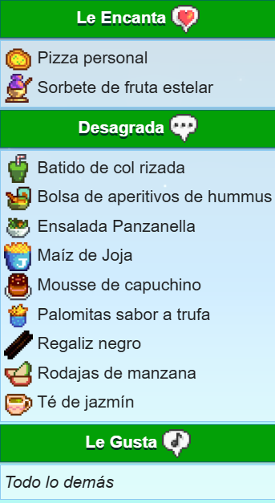
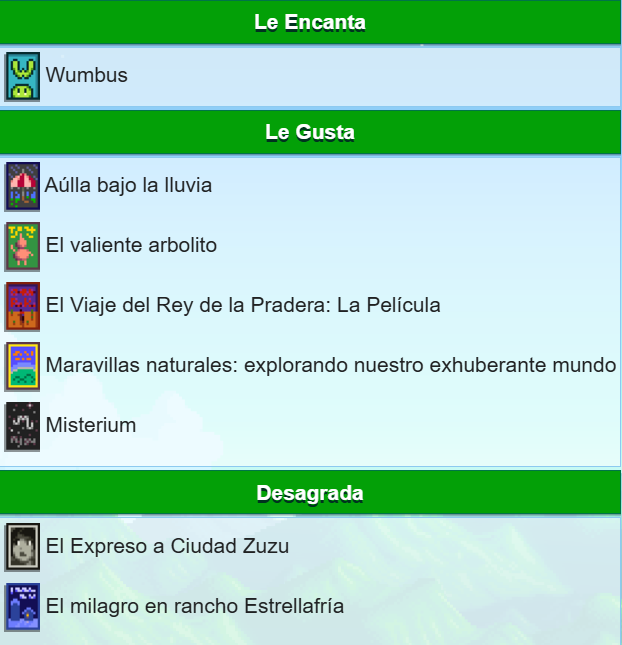

Curiosidades sam
- Sam es alérgico al polen, algo que menciona durante la Fiesta del Huevo. También menciona que su "nariz está contenta" durante el verano debido a que el número de polen suele ser menor.
- "Sam" es abreviatura de "Samson", nombre que revela al jugador(a) cuando tienen una buena relación. Él también afirma que no quiere que el jugador(a) se lo diga a nadie.
- "Sam" es un nombre unisex de origen Hebreo, que significa "Dios ha oído". Otros significados son "El hijo del sol" o "Sol brillante".
- En los retratos de Sam, su camiseta interior es amarilla, sin embargo, en sus fotos, es roja.
- La Guitarra vieja de Sam es un arma en el juego, pero no está disponible actualmente.
Agunos gustos extras de Sam


Regresar al inicio